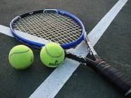

Тенис је спорт са рекетима који играју два играча (сингл) или два тима од по два играча (дубл). Играчи користе рекет за тенис да би пребацили лоптицу у противнички део терена преко мреже која се налази на средини терена. Почео је да се игра у Енглеској у 19. веку. Врло брзо је почео да се шири по земљама у којима се говори енглески језик, и то највише међу вишим сталежом. Тенис је данас Олимпијски спорт и играју га сви људи, независно од друштвеног статуса. Правила играња су иста још од 90-их година 19. века. Изузетак је увођење тај-брејка (енгл. tie-break = „прелом“ изједначења) 70-их година 20. века. Тенис је веома популаран спорт који прате милиони људи, а посебно четири Гренд слем турнира (Grand Slam Tournaments).
 Модерни тенис потиче из Велике Британије, још из касног 19. века. Носио је првобитни назив lawn tennis, што би означавало „тенис на априлааку”.[8] Убрзо је стекао велику популарност у Европи, а касније и у целом свету.[9][10] Тенис је олимпијски спорт и играју га и млађе и старије генерације. Правила тениса нису битно измијењена још од касних 1890-их. Једине две значајне измене догодиле су се након 1970. године. Прихваћено је ново правило (tie breaker) за одређивање победника сета, те нова технологија која омогућава играчима да опозову судијску одлуку (challenge) и прегледају поновљени снимак кретања лоптице на терену, уколико сматрају да је ударац био исправан. Тенис многи прате уживо или путем телевизије и других медија. Највише посећени а уједно и најпрестижнији тениски турнири су Гранд Слам турнири, које чине отворена првенства: Аустралије (Australian Open), Француске (French Open или Roland Garros), Велике Британије (Вимблдон) и Сједињених Америчких Држава (US Open).